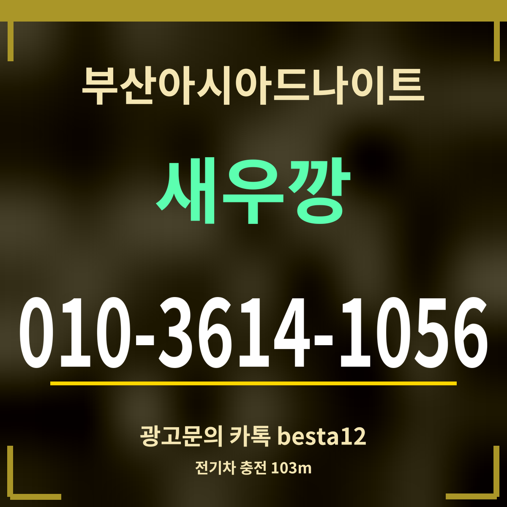

광고19세 미만 출입 금지
부산아시아드나이트 근처 전기차 충전소 안내, 103m부터
충전소 목록: 카카오맵 검색 「온천장 전기차충전소」 · 이용 조건·요금 칸 없음

핵심 3줄: 가장 가까운 충전소는 르메이에르 동래타운(103m), 다음은 부산농심호텔(121m)입니다. 테슬라 전용 충전기는 농심호텔(138m)에 있고, 350m 안에 충전소가 여덟 곳입니다.
거리순 충전소
| 충전소 | 종류 | 주소 | 거리 |
|---|---|---|---|
| 부산 동래구 르메이에르 동래타운 전기차충전소 | 전기차 충전소 | 금강공원로20번길 46 | 103m |
| 부산농심호텔 전기차충전소 | 전기차 충전소 | 금강공원로20번길 24 | 121m |
| 농심호텔 수퍼차저(DC콤보) 전기차충전소 (테슬라전용) | 테슬라 충전소 | 금강공원로20번길 23 | 138m |
| 부산동래 온천동종합금융센터 전기차충전소 | 전기차 충전소 | 온천장로125번길 7 | 240m |
| 부산동래 온천장sk허브올리브 전기차충전소 | 전기차 충전소 | 금강공원로 2 | 289m |
| 온천장신협 전기차충전소 | 전기차 충전소 | 금정구 온천장로125번길 46 | 315m |
| 홈플러스 동래점 전기차충전소 | 전기차 충전소 | 중앙대로 1523 | 319m |
| 동래 SK 허브스카이 전기차충전소 | 전기차 충전소 | 중앙대로 1523 | 336m |
충전하며 기다릴 때
아파트·호텔 건물에 있는 충전기는 주민이나 손님만 쓰게 할 수 있습니다. 충전 요금과 이용 가능 시간은 목록에 없어 적지 않았으니, 가기 전에 충전 앱이나 건물에 확인하세요.
충전하는 동안 근처 카페나 식당에서 기다리면 시간이 금방 갑니다. 다만 술을 마실 생각이라면 충전을 마친 차를 그날 몰면 안 됩니다. 부산아시아드나이트에는 카카오맵 기준 무료 주차가 표시되어 있습니다.
자주 묻는 것
가장 가까운 충전소는?
르메이에르 동래타운(금강공원로20번길 46) — 103m.
테슬라 충전기도 있나요?
농심호텔 수퍼차저(금강공원로20번길 23) — 138m, 테슬라 전용입니다.
요금은요?
목록에 없어 충전 앱에서 확인하세요.
한 줄 정리: 부산아시아드나이트 103m부터 전기차 충전소 — 건물 안 충전기는 이용 조건부터 확인.
기름차라면 근처 주유소를 보세요.
이 페이지는 광고이며, 업소 제공 정보를 받아 실었습니다(담당 새우깡). 확인일 2026-09-27.